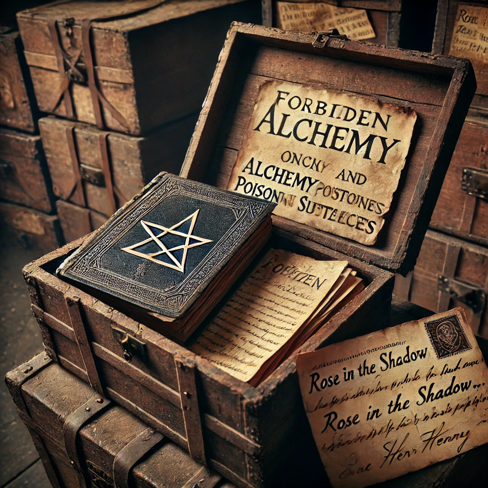

Sklep v domě sira Henryho
Jedna z beden obsahuje zakázané knihy o alchymii a jedovatých látkách. V jiné je stará korespondence mezi Sir Henrym a anonymním autorem podepisujícím se jako „Růže ve stínu“. Dopisy naznačují, že Sir Henry vydíral členy Bratrstva, aby získal jejich tajemství.
V jedné z beden je dopis od Lady Eleanor Redmayne, která píše Sir Henrymu: „Pokud to, co tvrdíte, je pravda, pak nás všechny ohrozíte. Musíte přestat.“